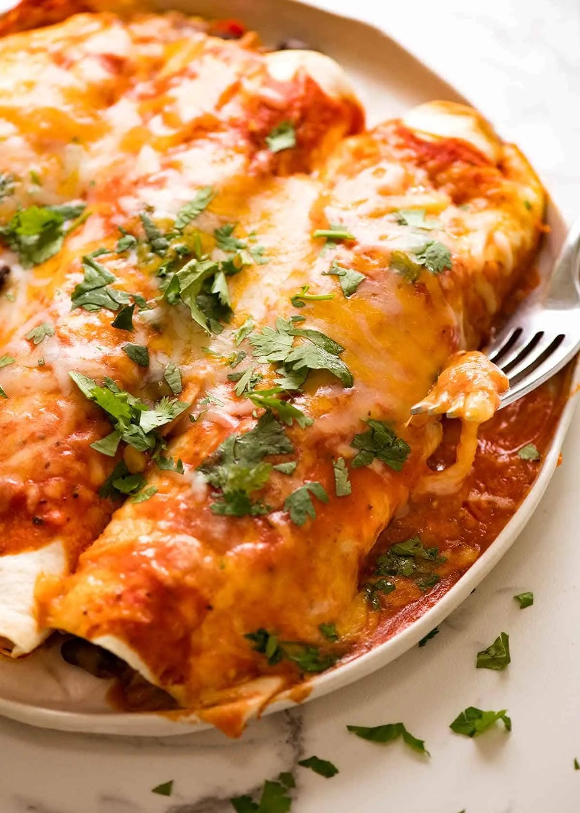

chicken enchilada

description
a Mexican dish that's made from tortillas wrapped around meat or cheese, and cooked in a spicy sauce."
Ingredients
For the Chicken Filling:
- 2 cups cooked, shredded chicken (rotisserie chicken works well)
- 1 cup shredded cheddar or Monterey Jack cheese
- 1/2 cup chopped onions
- 1/2 cup sour cream
- 1 can (4 oz) diced green chilies
- 1 teaspoon ground cumin
- Salt and pepper to taste
For the Enchilada Sauce:
- 2 tablespoons vegetable oil
- 2 tablespoons all-purpose flour
- 2 tablespoons chili powder
- 1/2 teaspoon garlic powder
- 1/2 teaspoon onion powder
- 1/2 teaspoon ground cumin
- 1/4 teaspoon dried oregano
- 2 cups chicken broth
- 1 (8 oz) can tomato sauce
- Salt and pepper to taste
For Assembling the Enchiladas:
- 8-10 corn or flour tortillas
- 1-2 cups shredded cheese (cheddar, Monterey Jack, or a blend)
- Chopped fresh cilantro for garnish (optional)
Instructions
Step 1: Prepare the Chicken Filling
- In a large bowl, combine the shredded chicken, cheese, onions, sour cream, diced green chilies, cumin, salt, and pepper. Mix well and set aside.
Step 2: Make the Enchilada Sauce
- In a medium saucepan, heat the vegetable oil over medium heat.
- Add the flour and chili powder, stirring constantly for about 1 minute to create a roux.
- Gradually whisk in the chicken broth, then add the tomato sauce, garlic powder, onion powder, cumin, and oregano.
- Bring the sauce to a simmer and cook for 10-15 minutes until it thickens slightly. Season with salt and pepper to taste.